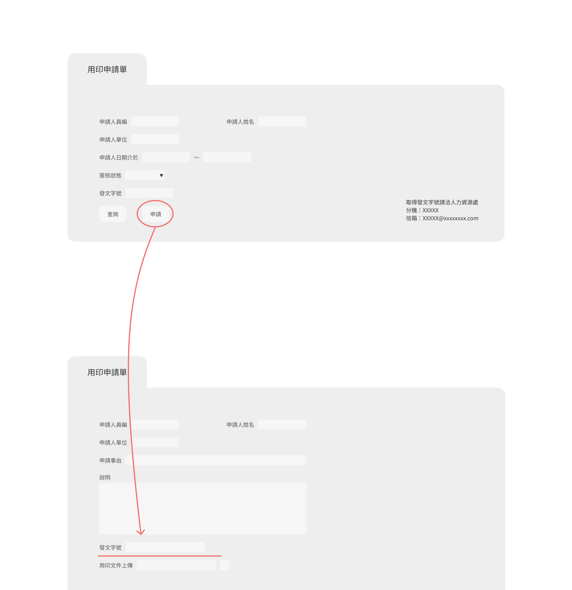
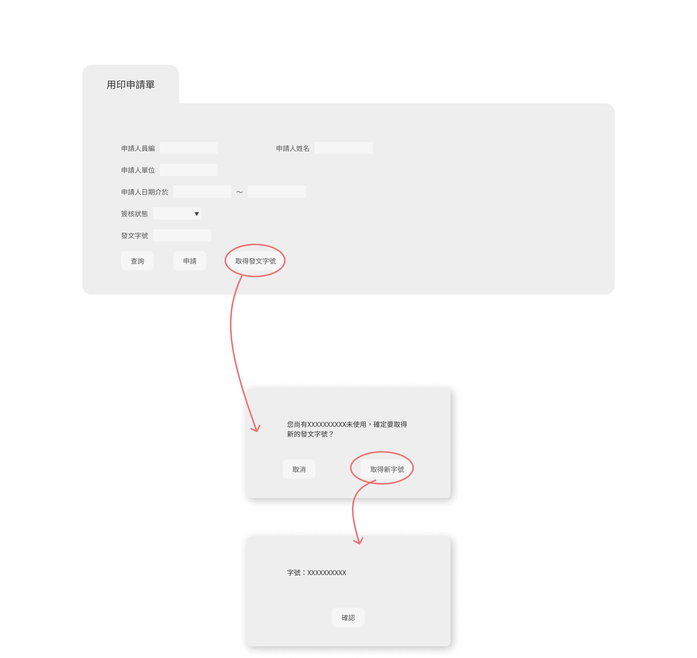

簡單取號：優化申請流程
專案背景
這個專案著重於優化公司內部的ERP系統，特別針對用印申請流程中的發文字號取得進行改善。過去，僅限人資同仁擁有取得發文字號的權限，這導致了效率低下和重複工作的問題。然而，直接開放所有同仁的權限並不切實際，可能會導致管理上的混亂和安全性問題。在當時主管的指派下，我提出了兼顧效率和管理需求的解決方案，並將取號記錄留存在系統中，以提高效率、透明度和管理控制。這項改變對公司的流程和工作效率都有著積極的影響。
用印申請的挫折：場景模擬
- 等待的煎熬——申請用印的同仁
想像你因工作需要，在 ERP 系統中找到用印申請的頁面。你點擊「申請」後才發現，需要先寄信給人資申請發文字號。多麼令人沮喪！更糟的是，你可能急著使用，而人資同仁又可能忙得不可開交。這不僅浪費時間，還造成了額外的麻煩。這樣的情況每週都可能發生好幾次！
 - 手忙腳亂的日常——疲憊的人資
在這個充滿挑戰的下午，你不斷地處理著一封又一封的郵件。每次新的發文字號申請都讓你感到有點焦慮。除了立即回應每一封郵件外，還必須確保副本發送給相關的同事和主管。這種高強度的工作狀態令你感到壓力山大，讓你開始思考，是否有更有效的方法來處理這些申請，以減輕這種壓力和負擔。

困境評估
- 效率低下: 限制了僅由人資同仁提供發文字號，這造成了申請者必須等待和依賴單一渠道的問題，降低了申請流程的效率。
- 溝通成本高昂: 申請者需要發送電子郵件至人資部門以獲取發文字號，這樣的方式需要額外的時間和資源，增加了整個申請流程的成本。
- 重複工作: 由於缺乏系統化的管理，申請者可能因忘記先前已取過的發文字號而重複申請，這不僅浪費了時間資源，還可能導致混亂和錯誤。
權限開放的潛在挑戰
然而，對於公司的管理而言，想要解決這個問題並不僅僅是開放所有人的取號權限這麼簡單。彼時公司正在準備上市櫃，從製藥流程到文件申請，所有的SOP都面臨嚴格的檢視，即使只是取號未用這樣無傷大雅的小事都要能給出合理的解釋。
為避免開放權限後造成隨意取號的亂象，我思考過每單位固定同仁擁有權限，或是申請前須先由單位主管核准等方案，最終考量到使用上的方便性，希望能徹底解決效率不彰和重工的問題，決定開放所有人取號，並將取過的字號留存在個人的紀錄當中。
我的職責
作為專案負責人，我的職責包括提出優化方案，與資訊處同仁討論方案可行性並進行系統改善。我負責設計測試方案，並進行測試以確保新流程的順利實施。在實施過程中，我負責與團隊協調，解決問題並進行迭代改進。最後，我負責製作使用說明文件，並發布公告以通知公司內部成員。
解決方案

優化要點
-
提高使用彈性，讓取號更簡便
- 需求者可直接在用印申請頁面選擇是否需要發文字號，無需再等待人力資源的回覆。這使得申請流程更加迅速和方便，節省了寶貴的時間。
- 先前申請但未使用的字號可以保留在個人權限中，無需重複申請，提高了申請資源的利用率。
-
解決重工問題，有效管理所有字號
- 所有同仁均可自行取號，且取號紀錄會自動留存在系統中。這使得人力資源同仁可以隨時查詢字號的申請及使用情形，避免了重複取號和回覆的問題。
- 透過系統的有效管理，不僅降低了人力資源的工作負擔，還提高了整個流程的透明度和管理效率，從而增強了公司內部的協作和效率。
實施成果與體悟
在新的功能上線後，我們觀察到公司內部的冗余信件明顯減少了。這是因為新的流程讓使用者可以直接在系統中申請發文字號，無需再透過電子郵件與人力資源部門來回溝通。這樣的改變不僅提高了申請流程的效率，也減少了溝通成本和時間浪費。
在這個過程中，我也深刻地意識到了使用者經驗設計的重要性。通過與使用者的密切合作和深入理解他們的需求，我們能夠設計出更符合他們期望和使用習慣的系統。這不僅提高了系統的易用性，也增強了使用者的滿意度和工作效率。
這次的實施成果讓我深刻體悟到，使用者經驗設計不僅僅是一個流行語，而是一個能夠真正改變產品和流程的關鍵因素。通過不斷地優化使用者體驗，可以提高產品的價值，增強公司的競爭力，並為使用者帶來更好的工作體驗。